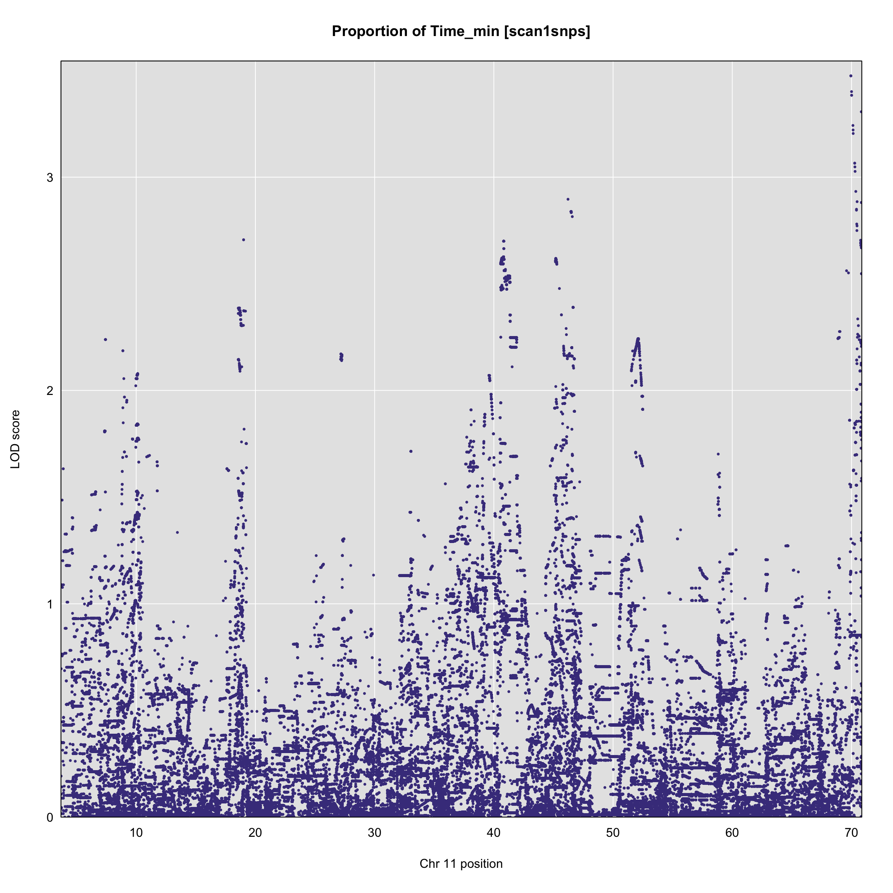
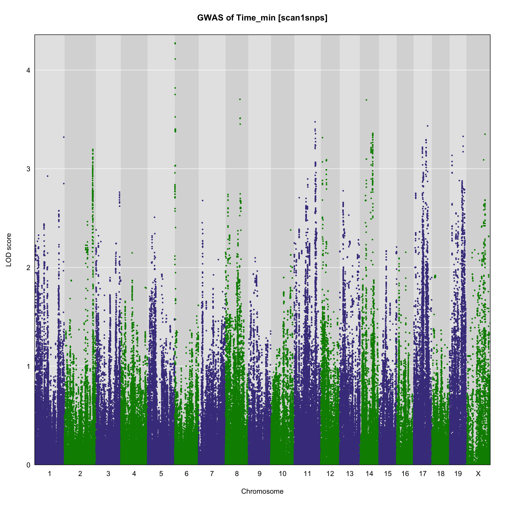
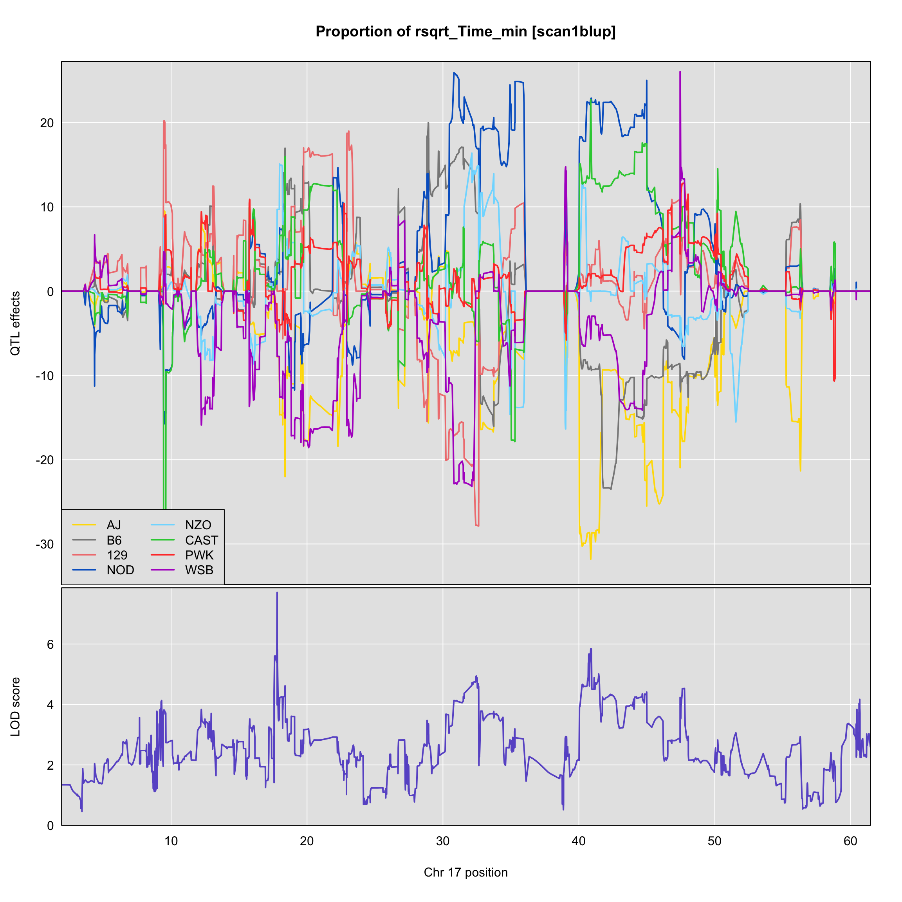
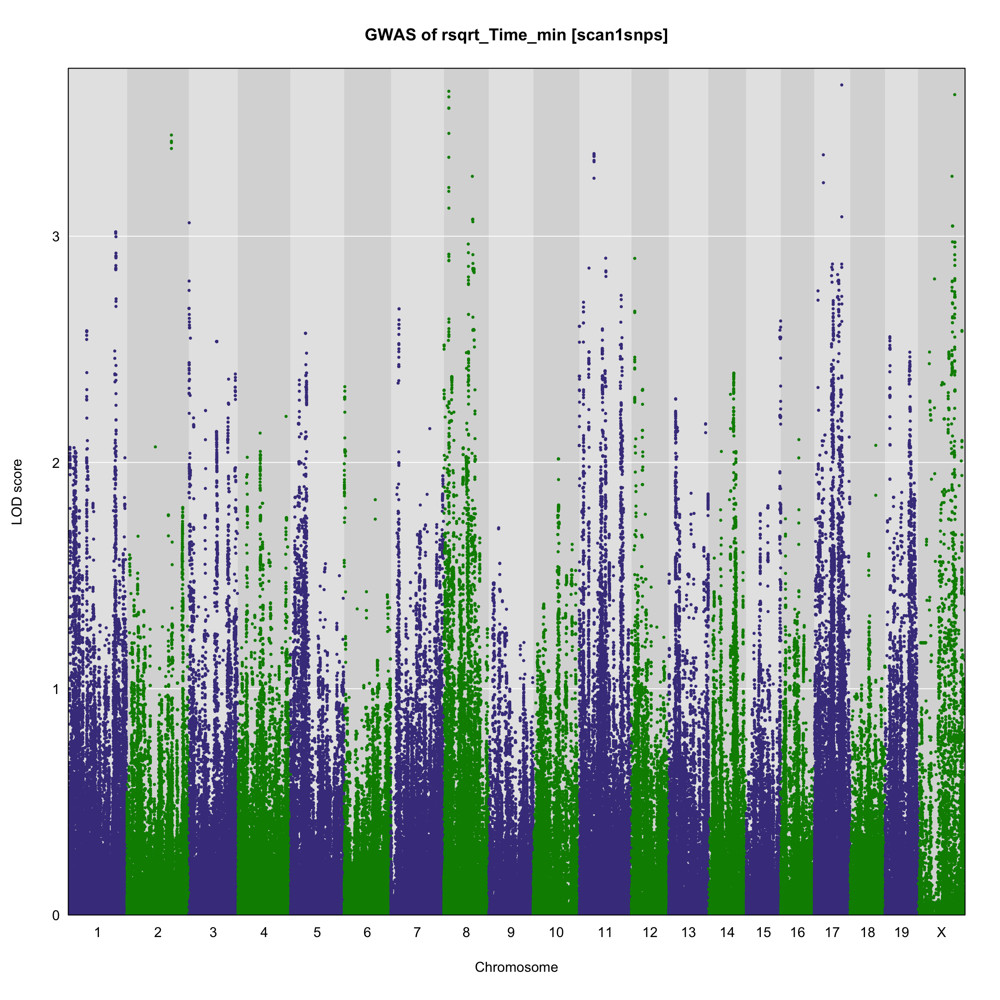
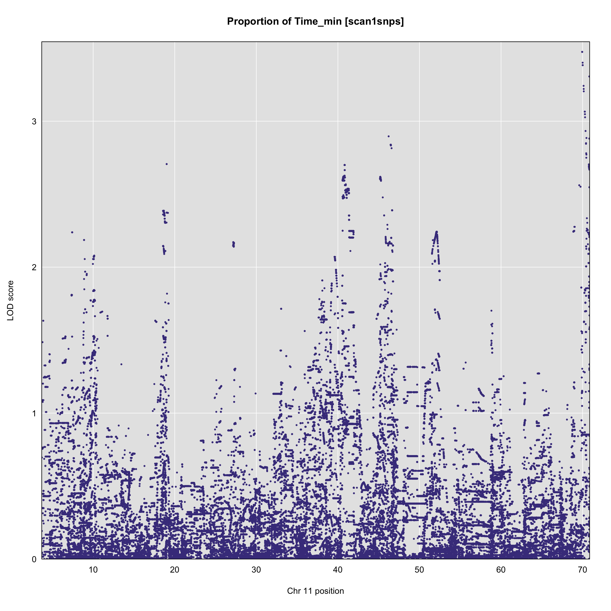
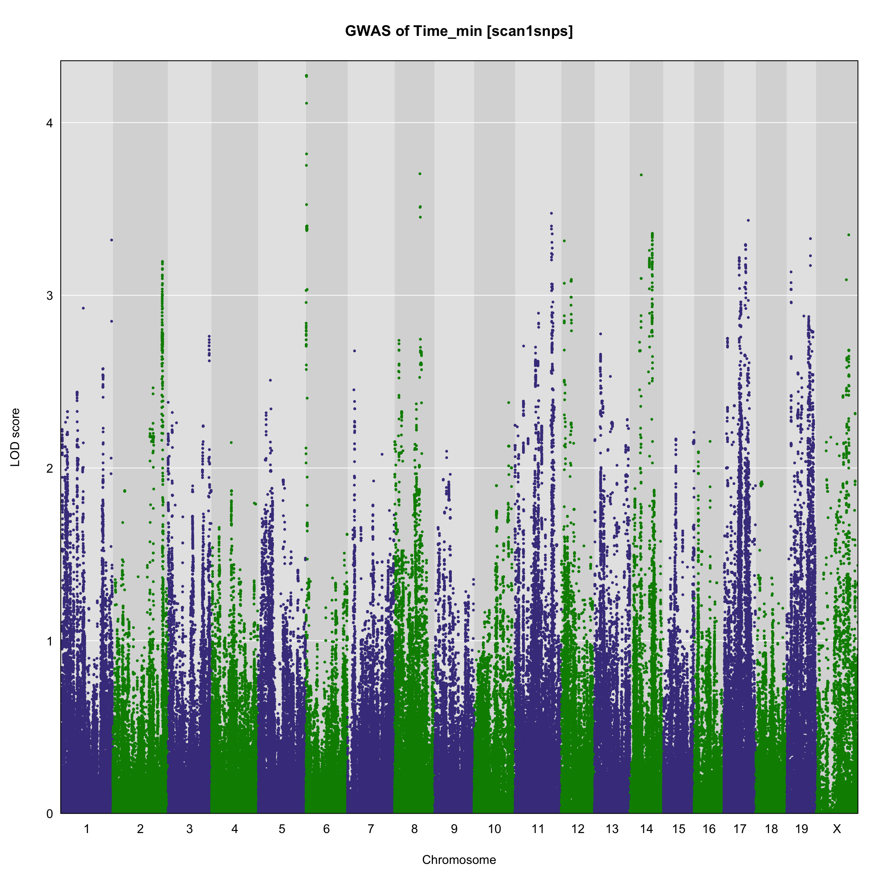
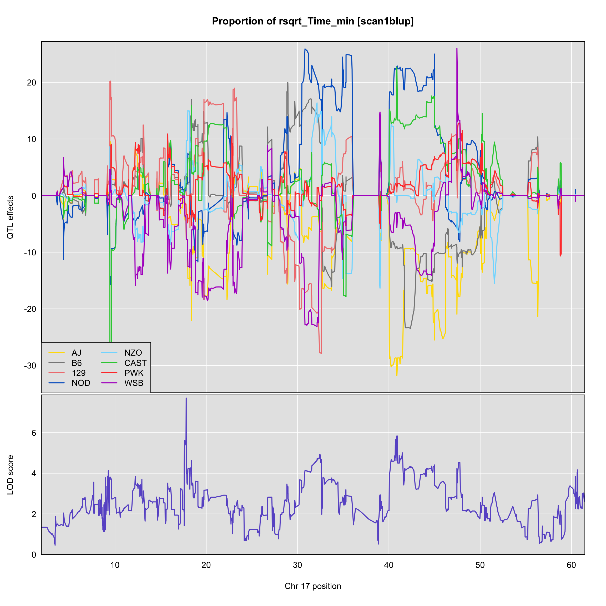
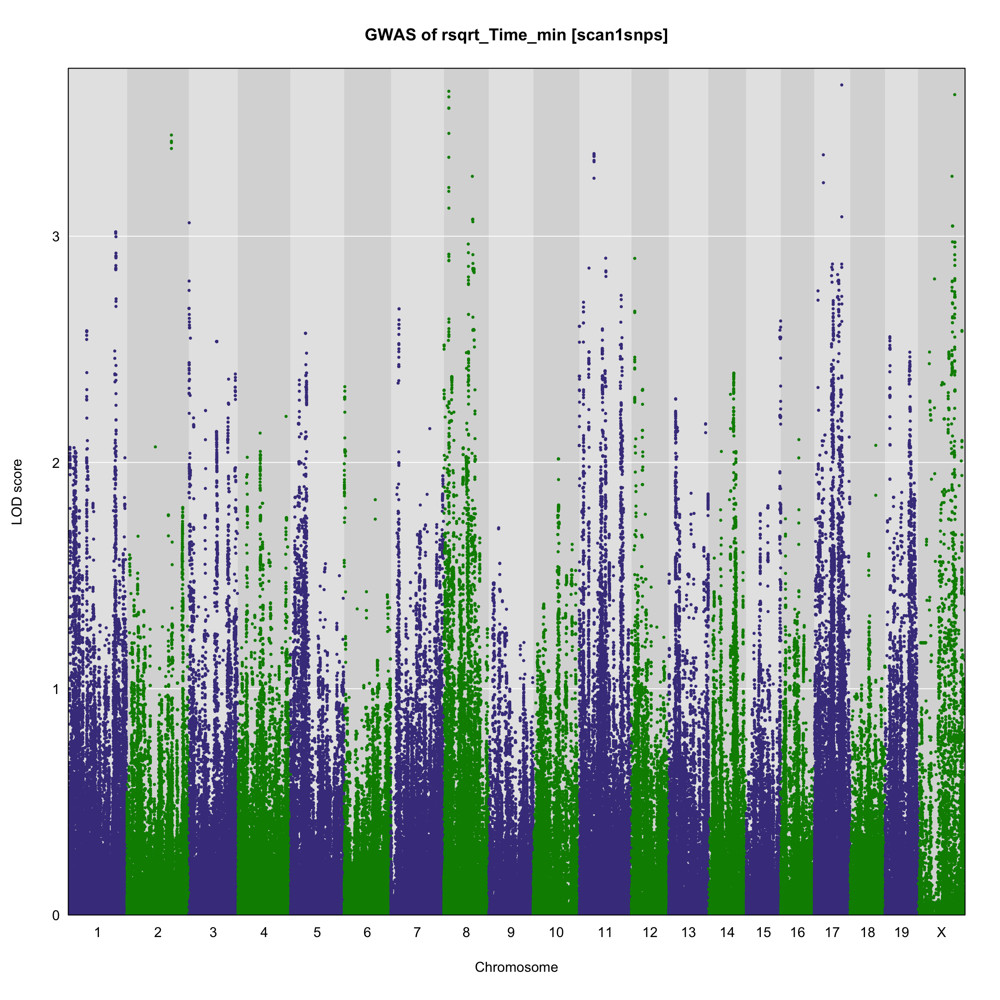
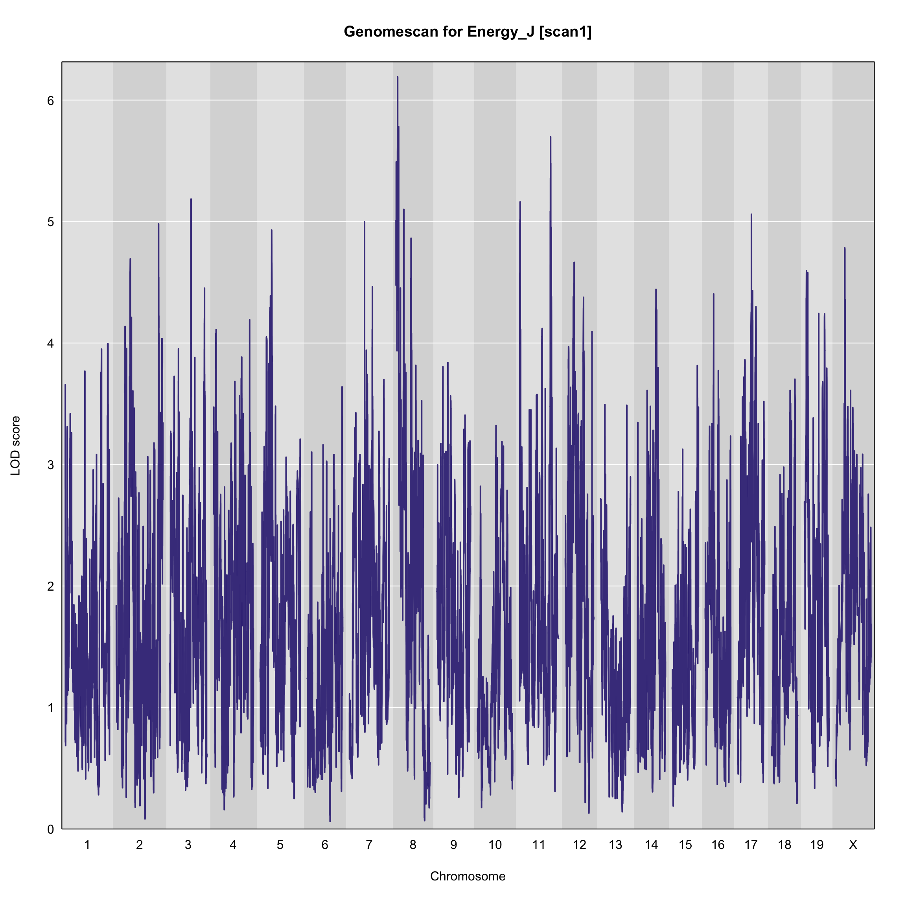
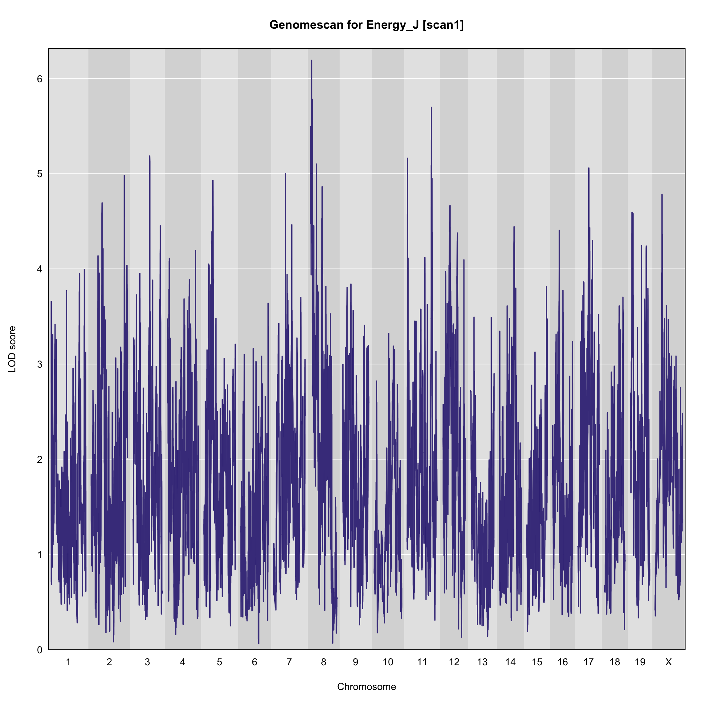

Last updated: 2020-03-24
Checks:
Knit directory: Thaiss_workflowr_old/
This reproducible R Markdown analysis was created with workflowr (version 1.6.0). The Checks tab describes the reproducibility checks that were applied when the results were created. The Past versions tab lists the development history.
Great! Since the R Markdown file has been committed to the Git repository, you know the exact version of the code that produced these results.
Great job! The global environment was empty. Objects defined in the global environment can affect the analysis in your R Markdown file in unknown ways. For reproduciblity it’s best to always run the code in an empty environment.
The command set.seed(20200309) was run prior to running the code in the R Markdown file. Setting a seed ensures that any results that rely on randomness, e.g. subsampling or permutations, are reproducible.
Nice! There were no cached chunks for this analysis, so you can be confident that you successfully produced the results during this run.
Using absolute paths to the files within your workflowr project makes it difficult for you and others to run your code on a different machine. Change the absolute path(s) below to the suggested relative path(s) to make your code more reproducible.
absolute
relative
/Users/corneb/Documents/MyJax/CS/Projects/qtl2/Univ_of_Penn_Thaiss/Thaiss/three.batches/Thaiss_workflowr_old
.
Great! You are using Git for version control. Tracking code development and connecting the code version to the results is critical for reproducibility. The version displayed above was the version of the Git repository at the time these results were generated. wflow_publish or wflow_git_commit). workflowr only checks the R Markdown file, but you know if there are other scripts or data files that it depends on. Below is the status of the Git repository when the results were generated:
Ignored files:
Ignored: .DS_Store
Ignored: .Rhistory
Ignored: .Rproj.user/
Ignored: analysis/.DS_Store
Ignored: analysis/.Rhistory
Ignored: data/.DS_Store
Ignored: output/.DS_Store
Untracked files:
Untracked: Thaiss_workflow-master.zip
Untracked: Thaiss_workflow-master/
Untracked: Thaiss_workflowr.Rproj
Untracked: Thaiss_workflowr_old/
Untracked: Univ_of_Penn_Thaiss_pheno_all copy.csv
Untracked: Univ_of_Penn_Thaiss_pheno_all.csv
Untracked: Univ_of_Penn_Thaiss_pheno_all_ssqc_rnorm.csv
Untracked: analysis/2.1_preparing_files.R
Untracked: analysis/2.2_sample_qc.Rmd
Untracked: analysis/2.3.1_snp_qc.Rmd.R
Untracked: analysis/2.3_sample_qc.R.old
Untracked: analysis/2.3_sample_qc.Rmd.old
Untracked: analysis/2.3_snp_qc.Rmd.R
Untracked: analysis/2.4.1_afterqc.Rmd.R
Untracked: analysis/2.4_preparing_files_qtl2.R
Untracked: analysis/2.5.1_preparing_files_qtl2.Rmd.R
Untracked: analysis/2.6_final_pr_apr_69K.R
Untracked: analysis/3.1.1.1_html_founder_prop.Rmd
Untracked: analysis/3.1.1_html_founder_prop.Rmd
Untracked: analysis/3.1.1_recomb_size_founder_prop.Rmd.R
Untracked: analysis/3.1_recomb_size_founder_prop.R
Untracked: analysis/array_intensities_bad.markers_allqc.Rmd.R
Untracked: analysis/array_intensities_bad.markers_v2.Rmd.R
Untracked: analysis/array_intensities_markers.R
Untracked: analysis/array_intensities_markers.Rmd.R
Untracked: analysis/bad_markers_allqc.Rmd.R
Untracked: analysis/cadillac/
Untracked: analysis/genotype_intensities.Rmd.R
Untracked: analysis/genotype_intensities.Rmd.old
Untracked: analysis/phenotypes_qtl_qc.Rmd.R
Untracked: analysis/reconst_utils_gtQC.R
Untracked: analysis/run_2.6_final_pr_apr_69K.R
Untracked: analysis_new/
Untracked: code_old/
Untracked: data/Final.Report/
Untracked: data/GM_foundergeno1.csv
Untracked: data/GM_foundergeno10.csv
Untracked: data/GM_foundergeno11.csv
Untracked: data/GM_foundergeno12.csv
Untracked: data/GM_foundergeno13.csv
Untracked: data/GM_foundergeno14.csv
Untracked: data/GM_foundergeno15.csv
Untracked: data/GM_foundergeno16.csv
Untracked: data/GM_foundergeno17.csv
Untracked: data/GM_foundergeno18.csv
Untracked: data/GM_foundergeno19.csv
Untracked: data/GM_foundergeno2.csv
Untracked: data/GM_foundergeno3.csv
Untracked: data/GM_foundergeno4.csv
Untracked: data/GM_foundergeno5.csv
Untracked: data/GM_foundergeno6.csv
Untracked: data/GM_foundergeno7.csv
Untracked: data/GM_foundergeno8.csv
Untracked: data/GM_foundergeno9.csv
Untracked: data/GM_foundergenoM.csv
Untracked: data/GM_foundergenoX.csv
Untracked: data/GM_foundergenoY.csv
Untracked: data/GM_gmap1.csv
Untracked: data/GM_gmap10.csv
Untracked: data/GM_gmap11.csv
Untracked: data/GM_gmap12.csv
Untracked: data/GM_gmap13.csv
Untracked: data/GM_gmap14.csv
Untracked: data/GM_gmap15.csv
Untracked: data/GM_gmap16.csv
Untracked: data/GM_gmap17.csv
Untracked: data/GM_gmap18.csv
Untracked: data/GM_gmap19.csv
Untracked: data/GM_gmap2.csv
Untracked: data/GM_gmap3.csv
Untracked: data/GM_gmap4.csv
Untracked: data/GM_gmap5.csv
Untracked: data/GM_gmap6.csv
Untracked: data/GM_gmap7.csv
Untracked: data/GM_gmap8.csv
Untracked: data/GM_gmap9.csv
Untracked: data/GM_gmapM.csv
Untracked: data/GM_gmapX.csv
Untracked: data/GM_gmapY.csv
Untracked: data/GM_info.csv
Untracked: data/GM_pmap1.csv
Untracked: data/GM_pmap10.csv
Untracked: data/GM_pmap11.csv
Untracked: data/GM_pmap12.csv
Untracked: data/GM_pmap13.csv
Untracked: data/GM_pmap14.csv
Untracked: data/GM_pmap15.csv
Untracked: data/GM_pmap16.csv
Untracked: data/GM_pmap17.csv
Untracked: data/GM_pmap18.csv
Untracked: data/GM_pmap19.csv
Untracked: data/GM_pmap2.csv
Untracked: data/GM_pmap3.csv
Untracked: data/GM_pmap4.csv
Untracked: data/GM_pmap5.csv
Untracked: data/GM_pmap6.csv
Untracked: data/GM_pmap7.csv
Untracked: data/GM_pmap8.csv
Untracked: data/GM_pmap9.csv
Untracked: data/GM_pmapM.csv
Untracked: data/GM_pmapX.csv
Untracked: data/GM_pmapY.csv
Untracked: data/GM_snps.Rdata
Untracked: data/Thaiss_Univ_of_Penn_Thaiss__GigaMUGA_genoprobs_8state.rds
Untracked: data/Univ_of_Penn_Thaiss_covar_all.csv
Untracked: data/Univ_of_Penn_Thaiss_pheno_all.csv
Untracked: data/Univ_of_Penn_Thaiss_pheno_all_rnorm.csv
Untracked: data/Univ_of_Penn_Thaiss_pheno_all_ssqc_rnorm.csv
Untracked: data/Univ_of_Penn_Thaiss_qtl2_chrXint.csv
Untracked: data/Univ_of_Penn_Thaiss_qtl2_chrYint.csv
Untracked: data/Univ_of_Penn_Thaiss_qtl2_geno1.csv
Untracked: data/Univ_of_Penn_Thaiss_qtl2_geno10.csv
Untracked: data/Univ_of_Penn_Thaiss_qtl2_geno11.csv
Untracked: data/Univ_of_Penn_Thaiss_qtl2_geno12.csv
Untracked: data/Univ_of_Penn_Thaiss_qtl2_geno13.csv
Untracked: data/Univ_of_Penn_Thaiss_qtl2_geno14.csv
Untracked: data/Univ_of_Penn_Thaiss_qtl2_geno15.csv
Untracked: data/Univ_of_Penn_Thaiss_qtl2_geno16.csv
Untracked: data/Univ_of_Penn_Thaiss_qtl2_geno17.csv
Untracked: data/Univ_of_Penn_Thaiss_qtl2_geno18.csv
Untracked: data/Univ_of_Penn_Thaiss_qtl2_geno19.csv
Untracked: data/Univ_of_Penn_Thaiss_qtl2_geno2.csv
Untracked: data/Univ_of_Penn_Thaiss_qtl2_geno3.csv
Untracked: data/Univ_of_Penn_Thaiss_qtl2_geno4.csv
Untracked: data/Univ_of_Penn_Thaiss_qtl2_geno5.csv
Untracked: data/Univ_of_Penn_Thaiss_qtl2_geno6.csv
Untracked: data/Univ_of_Penn_Thaiss_qtl2_geno7.csv
Untracked: data/Univ_of_Penn_Thaiss_qtl2_geno8.csv
Untracked: data/Univ_of_Penn_Thaiss_qtl2_geno9.csv
Untracked: data/Univ_of_Penn_Thaiss_qtl2_genoM.csv
Untracked: data/Univ_of_Penn_Thaiss_qtl2_genoX.csv
Untracked: data/Univ_of_Penn_Thaiss_qtl2_genoY.csv
Untracked: data/apr_69kchr_DO112_ssqc.RData
Untracked: data/apr_DO110.RData
Untracked: data/apr_DO112_allqc.RData
Untracked: data/apr_DO112_ssqc.RData
Untracked: data/bad_markers.RData
Untracked: data/bad_markers_all.RData
Untracked: data/e.RData
Untracked: data/e_g_snpg_samqc.RData
Untracked: data/errors_ind.RData
Untracked: data/errors_ind_qc.RData
Untracked: data/fp.RData
Untracked: data/fp_allqc.RData
Untracked: data/genotype_errors_marker.RData
Untracked: data/genotype_freq_marker.RData
Untracked: data/gm.json
Untracked: data/gm.no.bad.cr.dup.gf.RData
Untracked: data/gm.yaml
Untracked: data/gm_2.json
Untracked: data/gm_DO110_qc.RData
Untracked: data/gm_DO112.RData
Untracked: data/gm_DO112_allqc.RData
Untracked: data/gm_DO112_samqc.RData
Untracked: data/gm_DO112_samqc_qc.RData
Untracked: data/gm_DO112_ssqc.RData
Untracked: data/gm_heh.json
Untracked: data/heh/
Untracked: data/intensities.fst
Untracked: data/intensities.fst.RData
Untracked: data/m.RData
Untracked: data/nxo.RData
Untracked: data/percent_missing_id.RData
Untracked: data/percent_missing_id_allsamples.RData
Untracked: data/percent_missing_id_qc.RData
Untracked: data/percent_missing_marker.RData
Untracked: data/pheno.csv
Untracked: data/pr.RData
Untracked: data/pr_69k_DO112_ssqc.RData
Untracked: data/pr_69kchr_DO112_ssqc.RData
Untracked: data/pr_DO110.RData
Untracked: data/pr_DO112_allqc.RData
Untracked: data/pr_DO112_ssqc.RData
Untracked: data/prcl.RData
Untracked: data/prcl_allqc.RData
Untracked: data/qc_info_bad_sample.RData
Untracked: data/qc_info_bad_sample_qc.RData
Untracked: data/recom_block_size.RData
Untracked: data/recom_block_size_allqc.RData
Untracked: data/snpg.RData
Untracked: data/snps.gigamuga.Rdata
Untracked: data/summary.cg.RData
Untracked: data/summary.cg_allsamples.RData
Untracked: data/summary.cg_qc.RData
Untracked: data_old/
Untracked: docs.old/
Untracked: docs_new/
Untracked: output/DO_Gigamuga_founder_proportions_G32.png
Untracked: output/DO_Gigamuga_founder_proportions_chr2_G32.png
Untracked: output/DO_Gigamuga_founder_proportions_chr2_G32_chr2.png
Untracked: output/DO_recom_block_size_G32.png
Untracked: output/DO_recom_block_size_G32_allqc.png
Untracked: output/Percent_genotype_errors_obs_vs_predicted.pdf
Untracked: output/Percent_genotype_errors_obs_vs_predicted_qc.pdf
Untracked: output/Percent_missing_genotype_data.pdf
Untracked: output/Percent_missing_genotype_data_per_marker.pdf
Untracked: output/Percent_missing_genotype_data_qc.pdf
Untracked: output/Proportion_matching_genotypes_before_removal_of_bad_samples.pdf
Untracked: output/Proportion_matching_genotypes_before_removal_of_bad_samples_qc.pdf
Untracked: output/blup/
Untracked: output/blup_allqc/
Untracked: output/blup_rnorm.9/
Untracked: output/blup_rnorm/
Untracked: output/blup_rnorm_allqc/
Untracked: output/genotype_error_marker.pdf
Untracked: output/genotype_error_marker_qc.pdf
Untracked: output/genotype_frequency_marker.pdf
Untracked: output/genotype_frequency_marker_qc.pdf
Untracked: output/m1.Univ_of_Penn_Thaiss_pheno_all.RData
Untracked: output/m1.Univ_of_Penn_Thaiss_pheno_all_allqc.RData
Untracked: output/m1.Univ_of_Penn_Thaiss_pheno_all_allqc_genomescan.pdf
Untracked: output/m1.Univ_of_Penn_Thaiss_pheno_all_coeffgeneplot.pdf
Untracked: output/m1.Univ_of_Penn_Thaiss_pheno_all_genomescan.pdf
Untracked: output/m1.Univ_of_Penn_Thaiss_pheno_all_rnorm.RData
Untracked: output/m1.Univ_of_Penn_Thaiss_pheno_all_rnorm_genomescan.pdf
Untracked: output/m1.Univ_of_Penn_Thaiss_pheno_all_ssqc_rnorm.RData
Untracked: output/m1.Univ_of_Penn_Thaiss_pheno_all_ssqc_rnorm_allqc.RData
Untracked: output/m1.Univ_of_Penn_Thaiss_pheno_all_ssqc_rnorm_allqc_genomescan.pdf
Untracked: output/m1.Univ_of_Penn_Thaiss_pheno_all_ssqc_rnorm_coeffgeneplot.pdf
Untracked: output/m1.Univ_of_Penn_Thaiss_pheno_all_ssqc_rnorm_genomescan.pdf
Untracked: output/m1.Univ_of_Penn_Thaiss_pheno_genomescan.pdf
Untracked: output/m2.Univ_of_Penn_Thaiss_pheno_all.RData
Untracked: output/m2.Univ_of_Penn_Thaiss_pheno_all_allqc.RData
Untracked: output/m2.Univ_of_Penn_Thaiss_pheno_all_allqc_genomescan.pdf
Untracked: output/m2.Univ_of_Penn_Thaiss_pheno_all_genomescan.pdf
Untracked: output/m2.Univ_of_Penn_Thaiss_pheno_all_rnorm.RData
Untracked: output/m2.Univ_of_Penn_Thaiss_pheno_all_ssqc_rnorm.RData
Untracked: output/m2.Univ_of_Penn_Thaiss_pheno_all_ssqc_rnorm_allqc.RData
Untracked: output/m2.Univ_of_Penn_Thaiss_pheno_all_ssqc_rnorm_allqc_genomescan.pdf
Untracked: output/m2.Univ_of_Penn_Thaiss_pheno_all_ssqc_rnorm_coeffgeneplot.pdf
Untracked: output/m2.Univ_of_Penn_Thaiss_pheno_all_ssqc_rnorm_genomescan.pdf
Untracked: output/m3.Univ_of_Penn_Thaiss_pheno_all.RData
Untracked: output/m3.Univ_of_Penn_Thaiss_pheno_all_allqc.RData
Untracked: output/m3.Univ_of_Penn_Thaiss_pheno_all_allqc_genomescan.pdf
Untracked: output/m3.Univ_of_Penn_Thaiss_pheno_all_genomescan.pdf
Untracked: output/m3.Univ_of_Penn_Thaiss_pheno_all_rnorm.RData
Untracked: output/m3.Univ_of_Penn_Thaiss_pheno_all_ssqc_rnorm.RData
Untracked: output/m3.Univ_of_Penn_Thaiss_pheno_all_ssqc_rnorm_allqc.RData
Untracked: output/m3.Univ_of_Penn_Thaiss_pheno_all_ssqc_rnorm_allqc_genomescan.pdf
Untracked: output/m3.Univ_of_Penn_Thaiss_pheno_all_ssqc_rnorm_coeffgeneplot.pdf
Untracked: output/m3.Univ_of_Penn_Thaiss_pheno_all_ssqc_rnorm_genomescan.pdf
Untracked: output/number_crossover.pdf
Untracked: output/number_crossover_qc.pdf
Untracked: output/permu/
Untracked: output/permu_rnorm.9/
Untracked: output/prop_across_generation_chr_p.RData
Untracked: output/prop_across_generation_chr_p_allqc.RData
Untracked: output/rplot_genoprobs_sample1.pdf
Untracked: output/rplot_kinship.pdf
Untracked: output/rplot_snpassoc_pmap.pdf
Untracked: output_old/
Note that any generated files, e.g. HTML, png, CSS, etc., are not included in this status report because it is ok for generated content to have uncommitted changes.
These are the previous versions of the R Markdown and HTML files. If you’ve configured a remote Git repository (see ?wflow_git_remote), click on the hyperlinks in the table below to view them.
File
Version
Author
Date
Message
Rmd
af8ef7f
Belinda Cornes
2020-03-24
local machine
knitr::opts_chunk$set(echo = TRUE,warning=FALSE)
##############################################
## Load and Explore data
##############################################
library(qtl2)
setwd("/Users/corneb/Documents/MyJax/CS/Projects/qtl2/Univ_of_Penn_Thaiss/Thaiss/three.batches/Thaiss_workflowr_old")
gm <- get(load("data/gm_DO112_allqc.RData"))
pr <- get(load("data/pr_DO112_allqc.RData"))
apr <- get(load("data/apr_DO112_allqc.RData"))
#apr <- readRDS("data/Thaiss_Univ_of_Penn_Thaiss__GigaMUGA_genoprobs_8state.rds")
pheno <- read.csv("data/Univ_of_Penn_Thaiss_pheno_all_rnorm.csv")
rownames(pheno) <- pheno$Mouse.ID
nrow(data.frame(gm$gmap[1])) [1] 8272dim(apr[[1]])[1] 102 8 8272dim(pr[[1]])[1] 102 36 8272#query_func = create_variant_query_func("/Users/corneb/Documents/MyJax/CS/Projects/qtl2/exdata/cc_variants.sqlite")
query_variants <- create_variant_query_func("/Users/corneb/Documents/MyJax/CS/Projects/qtl2/exdata/cc_variants.sqlite")
query_genes <- create_gene_query_func("/Users/corneb/Documents/MyJax/CS/Projects/qtl2/exdata/mouse_genes_mgi.sqlite")
#pdf('output/rplot_genoprobs_sample101.pdf')
#image(1:500, 1:ncol(apr[[1]]), t(apr[[1]][101,8:1,1:500]), breaks = 0:100/100,
# col = grey(99:0/100), axes = F, xlab = "Markers", ylab = "Founders",
# main = "Founder Allele Contributions for Sample 101")
#abline(h = 0:8 + 0.5, col = "grey70")
#usr = par("usr")
#rect(usr[1], usr[3], usr[2], usr[4])
#axis(side = 1, at = 0:5 * 100, labels = 0:5 * 100)
#axis(side = 2, at = 1:8, labels = LETTERS[8:1], las = 1, tick = F)
#dev.off()
##############################################
## Calculating A Kinship Matrix
##############################################
K = calc_kinship(probs = apr, type = "loco", use_allele_probs = TRUE)
#pdf('/home/corneb/projects/gedi/scripts/chenm/gigamuga/res/gigamuga_20180510_209_DO_Pack_Sleep/qtl2/rplot_kinship.pdf')
#pdf('output/rplot_kinship.pdf')
image(1:nrow(K[[1]]), 1:ncol(K[[1]]), K[[1]][,ncol(K[[1]]):1], xlab = "Samples",
ylab = "Samples", yaxt = "n", main = "Kinship between samples",
breaks = 0:100/100, col = heat.colors(length(0:100) - 1))
#dev.off()
## Covariates
addcovar = model.matrix(~Sex, data = pheno)[,-1]
##############################################
## Performing a genome scan
##############################################
for(i in c(2,3,4,5,6,8,9)){
qtl = scan1(genoprobs = apr, pheno = pheno[i], kinship = K, addcovar = addcovar)
#pdf('/Users/corneb/Documents/MyJax/CS/Projects/qtl2/rplot_genome_gmap.pdf')
plot_scan1(x = qtl, map = gm$gmap, main = paste0("Genomescan for ", names(pheno[i]), " [scan1]"))
#dev.off()
#}
##############################################
## Performing a permutation test
##############################################
#for(i in c(2,3,4,5,6,8,9)){
perms = scan1perm(genoprobs = apr, pheno = pheno[i], addcovar = addcovar, n_perm = 100)
#pdf('output/rplot_genomeperm_pmap.pdf')
plot(x = qtl, map = gm$pmap, main = paste0("Proportion of ", names(pheno[i]), " [scan1perm]"))
thr = summary(perms)
abline(h = thr, col = "red", lwd = 2)
#dev.off()
#}
##############################################
## Finding LOD peaks
##############################################
#for(i in c(2,3,4,5,6,8,9)){
peaks <- find_peaks(scan1_output = qtl, map = gm$gmap)
peaks
peaksg <- find_peaks(scan1_output = qtl, map = gm$gmap, threshold=maxlod(qtl)-0.001, drop = 1.5)
##############################################
## Estimated QTL effects
##############################################
chr = as.character(peaksg$chr)
start=peaksg[peaksg$lodcolumn == names(pheno[i]),"ci_lo"]
end=peaksg[peaksg$lodcolumn == names(pheno[i]),"ci_hi"]
coeff <- scan1coef(genoprobs = apr[,chr], pheno = pheno[i], kinship = K[[chr]], addcovar = addcovar)
#pdf('output/rplot_qtleffects_coef_pmap.pdf')
plot_coefCC(x = coeff, map = gm$gmap, scan1_output = qtl, main = paste0("Proportion of ", names(pheno[i]), " [scan1coef]"),legend="bottomleft")
#dev.off()
blup = scan1blup(genoprobs = apr[,chr], pheno = pheno[2], kinship = K[[chr]], addcovar = addcovar)
#pdf('output/rplot_qtleffects_gpmap.pdf')
plot_coefCC(x = blup, map = gm$gmap, scan1_output = qtl, main = paste0("Proportion of ", names(pheno[i]), " [scan1blup]"),legend="bottomleft")
#dev.off()
##############################################
## SNP Association Mapping
##############################################
assocgss = scan1snps(genoprobs = apr[,chr], map = gm$gmap, pheno = pheno[i],
kinship = K, addcovar = addcovar, query_func = query_variants, chr = chr, start = start, end = end, keep_all_snps = TRUE)
#pdf('output/rplot_snpassoc_ss_gmap.pdf')
plot_snpasso(assocgss$lod, assocgss$snpinfo, main = paste0("Proportion of ", names(pheno[i]), " [scan1snps]"))
#dev.off()
## plot genes
genesgss = query_genes(chr, start, end)
head(genesgss)
#pdf('/Users/corneb/Documents/MyJax/CS/Projects/qtl2/rplot_snpassocgenes_ss_gmap.pdf')
plot_snpasso(assocgss$lod, assocgss$snpinfo, main = paste0("Proportion of ", names(pheno[i]), " [scan1snps]"), genes = genesgss)
#dev.off()
##############################################
## GWAS plot
##############################################
out_gwas <- scan1snps(apr, gm$gmap, pheno[i], K, addcovar = addcovar, query_func=query_variants, cores=0)
#par(mar=c(4.1, 4.1, 0.6, 0.6))
plot(out_gwas$lod, out_gwas$snpinfo, altcol="green4", gap=0, main = paste0("GWAS of ", names(pheno[i]), " [scan1snps]"))
}
sessionInfo()R version 3.6.2 (2019-12-12)
Platform: x86_64-apple-darwin15.6.0 (64-bit)
Running under: macOS Catalina 10.15.2
Matrix products: default
BLAS: /Library/Frameworks/R.framework/Versions/3.6/Resources/lib/libRblas.0.dylib
LAPACK: /Library/Frameworks/R.framework/Versions/3.6/Resources/lib/libRlapack.dylib
locale:
[1] en_AU.UTF-8/en_AU.UTF-8/en_AU.UTF-8/C/en_AU.UTF-8/en_AU.UTF-8
attached base packages:
[1] stats graphics grDevices utils datasets methods base
other attached packages:
[1] qtl2_0.21-19 workflowr_1.6.0
loaded via a namespace (and not attached):
[1] Rcpp_1.0.4 knitr_1.28 whisker_0.4 magrittr_1.5
[5] bit_1.1-15.2 R6_2.4.1 rlang_0.4.5 blob_1.2.1
[9] stringr_1.4.0 highr_0.8 tools_3.6.2 parallel_3.6.2
[13] data.table_1.12.8 xfun_0.12 DBI_1.1.0 git2r_0.26.1
[17] htmltools_0.4.0 yaml_2.2.1 bit64_0.9-7 digest_0.6.25
[21] rprojroot_1.3-2 later_1.0.0 vctrs_0.2.4 promises_1.1.0
[25] fs_1.3.1 memoise_1.1.0 glue_1.3.2 evaluate_0.14
[29] RSQLite_2.2.0 rmarkdown_2.1 stringi_1.4.6 compiler_3.6.2
[33] backports_1.1.5 httpuv_1.5.2 pkgconfig_2.0.3

 
 
